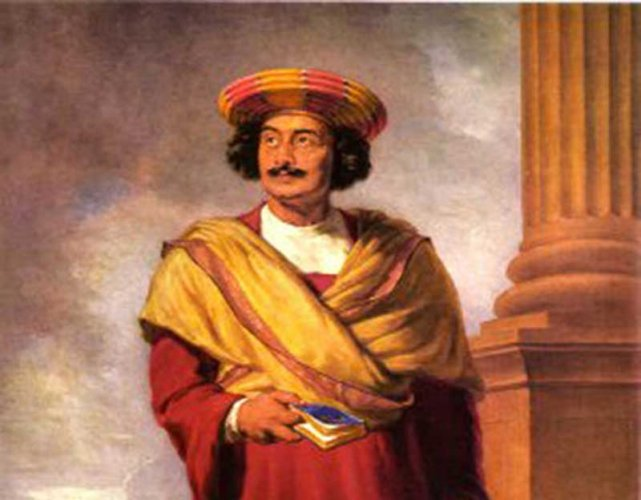
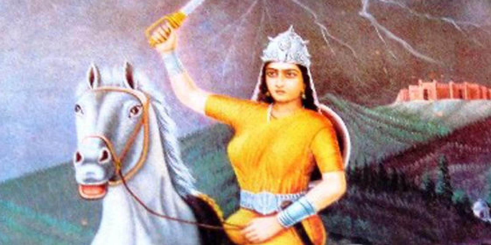

Unsung Heroes During Pre British Raj

Raja Ram Mohan Ray
Raja Ram Mohan Roy (22 May 1772 – 27 September 1833) was one of the founders of the Brahmo Sabha,
the precursor of the Brahmo Samaj, a socio-religious reform movement in the Indian subcontinent. He was given the title of Raja by
Akbar II, the Mughal emperor. His influence was apparent in the fields of politics, public administration, education and religion.
He was known for his efforts to abolish the practices of sati and child marriage. Raja Ram Mohan Roy is considered by many
historians as the "Father of the Indian Renaissance."

Rani Avantibai
Rani Avantibai (or Rani Avantibai Lodhi; died 20 March 1858) was a freedom fighter and queen of Ramgarh
who waged a war against the British to protect her kingdom.
She was the wife of King Vikramaditya Singh, the ruler of the Indian state of Ramgarh. She was a Lodhi queen in the area now in
Madhya Pradesh. She took over the reins of the kingdom when the king fell into ill-health.
She is remembered for her valiant fight against the British during the 1857 uprising for Independence.
Begum Hazrat Mahal
Begum Hazrat Mahal, also called as Begum of Awadh, was the second wife of Nawab Wajid Ali Shah.
Wajid Ali Shah met her in his palace. She rebelled against the British East India Company during the Indian Rebellion of 1857.
She finally found asylum in Nepal where she died in 1879.
After her husband had been exiled to Calcutta, she took charge of the affairs in the state of Awadh and seized control of Lucknow.
She organised an army of women and placed Uda Devi as its commander. She actively took part in the revolt of 1857 against the
Doctrine of Lapse under which Dalhousie wanted her to surrender Lucknow. She gave stiff resistance. But after the fall of
Lucknow she escaped to Kathmandu .She was a very brave women and such bravery in a male-dominated society was unprecedented.
Madam Cama
Bhikaiji Cama, née Bhikaiji Patel, Bhikaiji also known as Madame Cama, (born September 24, 1861, Bombay [now Mumbai],
India—died August 13, 1936, Bombay),Indian political activist and advocate for women’s rights
who had the unique distinction of unfurling the first version of the Indian national flag—a tricolour of green,
saffron, and red stripes—at the International Socialist Congress held at Stuttgart, Germany,
in 1907.
Uda Devi
Uda Devi was a warrior in the Indian Rebellion of 1857, who fought against the British East India Company.
While upper caste histories highlight the resistance contributions of upper caste heroines like Jhansi Rani, the reality was also
that the battles for independence from British colonial rule also featured Dalit resistance fighters like Devi.
Devi and other female Dalit participants are today remembered as the warriors or “Dalit Veeranganas” of the 1857 Indian Rebellion.
On seeing the rising anger of the Indian people with the British administration, Uda Devi reached out to the queen of that district,
Begum Hazrat Mahal to enlist for war. In order to prepare for
the battle that was headed their way, the Begum helped her form a women’s battalion under her command.When the British attacked
Awadh, both Uda Devi and her husband were part of the armed resistance.
When she heard that her husband had died in the battle, she unleashed her final campaign in full force..
Uda Devi
Uda Devi was a warrior in the Indian Rebellion of 1857, who fought against the British East India Company.
While upper caste histories highlight the resistance contributions of upper caste heroines like Jhansi Rani, the reality was also
that the battles for independence from British colonial rule also featured Dalit resistance fighters like Devi.
Devi and other female Dalit participants are today remembered as the warriors or “Dalit Veeranganas” of the 1857 Indian Rebellion.
On seeing the rising anger of the Indian people with the British administration, Uda Devi reached out to the queen of that district,
Begum Hazrat Mahal to enlist for war. In order to prepare for
the battle that was headed their way, the Begum helped her form a women’s battalion under her command.When the British attacked
Awadh, both Uda Devi and her husband were part of the armed resistance.
When she heard that her husband had died in the battle, she unleashed her final campaign in full force..
click on any below to learn more about unsung heroes!
 > > |
 |
|